Кадетский корпус
Кадетский корпус- Разведкорпус
- Военная полиция
- Гарнизон стен
Эрен Йегер
Эрен - лучше всего его характеризуют такие определения, как целеустремлённость, упорство, импульсивность. С самого детства Эрен мечтал вступить в Разведкорпус и выйти за пределы стен. Он сравнивал жизнь людей в Стенах с жизнью скота в клетке.
Микаса Аккерман
Микаса - эмоционально отрешённая девушка, но она любит своих друзей и заботится о них, особенно об Эрене и Армине, считая их своей семьёй, которую она не может позволить себе потерять. На её личность сильно повлиял Эрен, который сказал ей, что у неё не будет шанса выжить если она не будет бороться за свою жизнь.
Армин Арлерт
Армин - лучший друг Эрена и Микасы. Он обладает светлым умом, именно он рассказал Эрену о мире за Стеной. Армин очень добр и бескорыстен. Он волнуется о безопасности своих друзей и для их спасения готов пойти на крайние меры.
Конни Спрингер
Кони - довольно простой и прямолинейный по своей природе, он быстро выражает радость и гнев. Называет себя «гением», но часто не может разобраться в ситуации и просто увлекается происходящим.
Саша Браус
Саша - девушка на “Вы”. Всегда говорит уважительно и избегает конфликтов с товарищами, но на самом деле обладает диким характером. По происхождению - охотник, что объясняет её ненасытный аппетит, из-за часто ворует еду с кухонь.
Жан Кирштейн
Жан - способный и самодовольный кадет. Они с Эреном конфликтуют почти по любому поводу, не сходясь во взгядах. По ходу истории, он возвышается как личность и командир, видя, как многие его товарищи отдают свои жизни, чтобы остальные могли продолжать борьбу.
Энни Леонхарт
Энни - замкнутый человек, и завести дружеские отношения с ней нелегко. Она равнодушна к любой деятельности и не испытывает желания прилагать усилия в тренировках, которые она считает бессмысленными. Тем не менее, она искренне уважает людей, обладающими чувством долга и справедливости.
Имир
Имир - сложный человек. Сначала она кажется эгоистичной и циничной, отказывающейся от сотрудничества. Она ведёт себя крайне антисоциально, создаётся общий пессимистичный образ, однако Имир честный человек, в первую очередь к самой себе.
Криста Ленц
Криста - неуверенная в себе, но добрая девушка, готовая помогать людям. Она славится своими добротой и самопожертвованием, поэтому сослуживцы часто называют её «Богиня» и в мыслях предлагают ей выйти за них замуж.
Райнер Браун
Райнер - заработал репутацию честного человека с сильным чувством долга, который очень серьёзно относится к своей роли солдата, мотивируя остальных. Также о нём отзывались как о человеке с добрым сердцем и склонностью в первую очередь думать о других, принимая на себя трудности товарищей.
Бертольд Хувер
Бертольд - тихий, замкнутый человек. Кроме того, их инструктор отметил у него большой потенциал, но полное отсутствие инициативы. Он был описан Эреном как молчаливый человек заднего плана. По признанию Хувера, он является кем-то вроде труса.
Марко Ботт
Марко - доброжелательный юноша, который наладил контакт со всеми товарищами. Он один из немногих, кто понимает Жана, оптимистично интерпретируя его грубый характер и антагонизм по отношению к другим в Корпусе.
Кит Шадис
Кит - бывший Командующий Разведкорпуса, ныне инструктор, ответственный за воспитание 104-го кадетского корпуса. Хотя он очень строг с кадетами, он также полностью понимает их сильные и слабые стороны, благодаря чему спрведливо оценивает их.
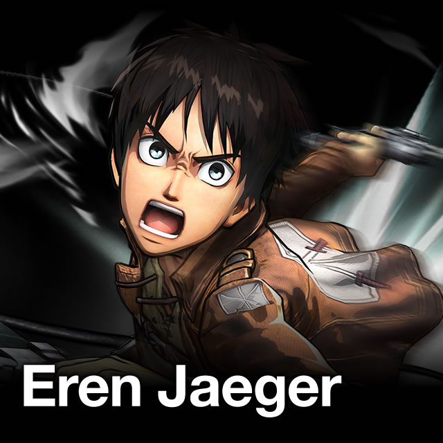
Эрен - лучше всего его характеризуют такие определения, как целеустремлённость, упорство, импульсивность. С самого детства Эрен мечтал вступить в Разведкорпус и выйти за пределы стен. Он сравнивал жизнь людей в Стенах с жизнью скота в клетке.
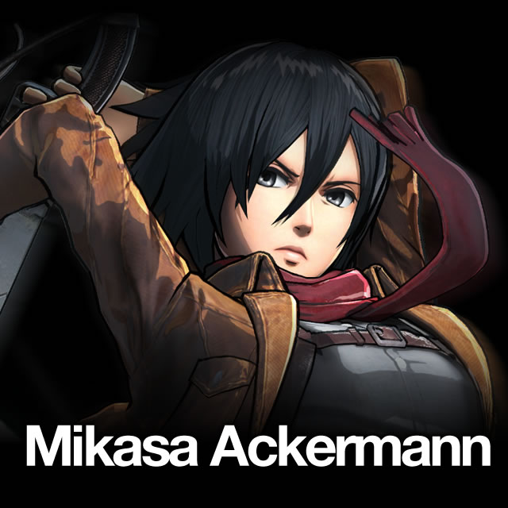
Микаса - эмоционально отрешённая девушка, но она любит своих друзей и заботится о них, особенно об Эрене и Армине, считая их своей семьёй, которую она не может позволить себе потерять. На её личность сильно повлиял Эрен, который сказал ей, что у неё не будет шанса выжить если она не будет бороться за свою жизнь.
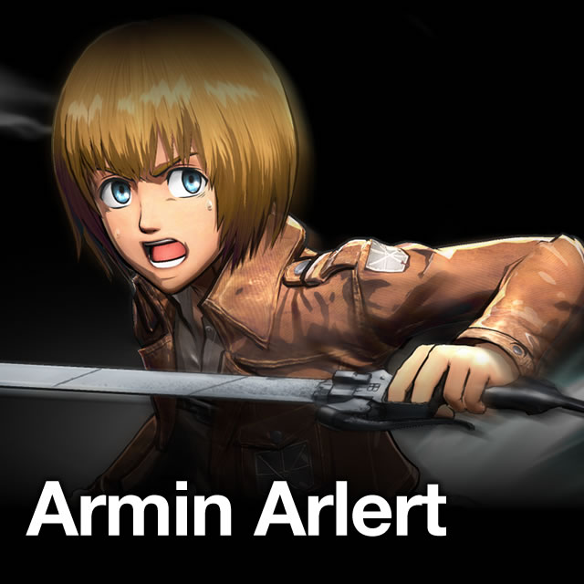
Армин - лучший друг Эрена и Микасы. Он обладает светлым умом, именно он рассказал Эрену о мире за Стеной. Армин очень добр и бескорыстен. Он волнуется о безопасности своих друзей и для их спасения готов пойти на крайние меры.
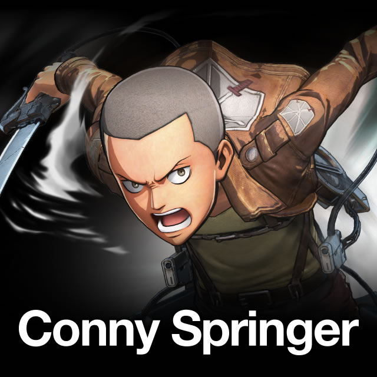
Кони - довольно простой и прямолинейный по своей природе, он быстро выражает радость и гнев. Называет себя «гением», но часто не может разобраться в ситуации и просто увлекается происходящим.
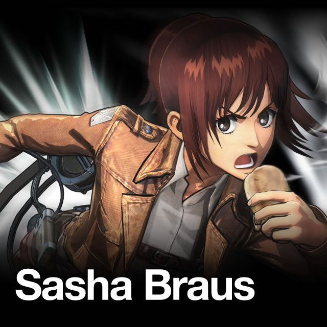
Саша - девушка на “Вы”. Всегда говорит уважительно и избегает конфликтов с товарищами, но на самом деле обладает диким характером. По происхождению - охотник, что объясняет её ненасытный аппетит, из-за часто ворует еду с кухонь.
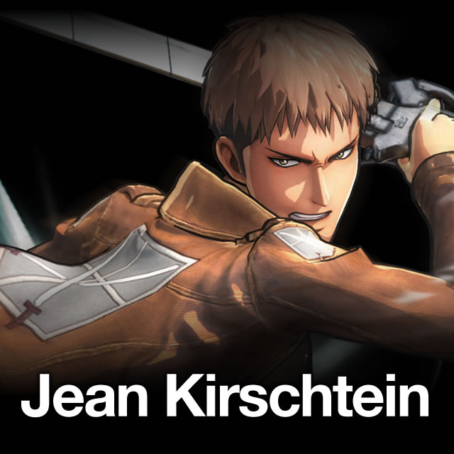
Жан - способный и самодовольный кадет. Они с Эреном конфликтуют почти по любому поводу, не сходясь во взгядах. По ходу истории, он возвышается как личность и командир, видя, как многие его товарищи отдают свои жизни, чтобы остальные могли продолжать борьбу.
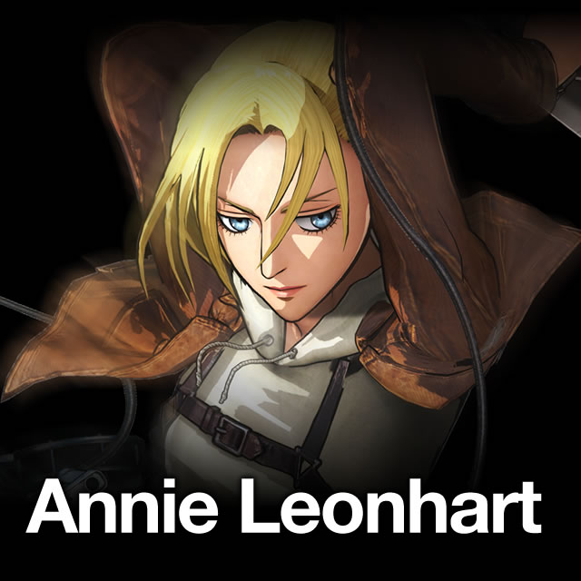
Энни - замкнутый человек, и завести дружеские отношения с ней нелегко. Она равнодушна к любой деятельности и не испытывает желания прилагать усилия в тренировках, которые она считает бессмысленными. Тем не менее, она искренне уважает людей, обладающими чувством долга и справедливости.
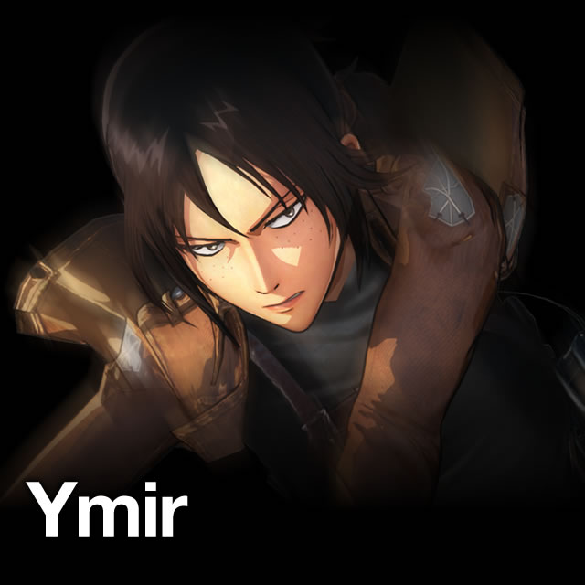
Имир - сложный человек. Сначала она кажется эгоистичной и циничной, отказывающейся от сотрудничества. Она ведёт себя крайне антисоциально, создаётся общий пессимистичный образ, однако Имир честный человек, в первую очередь к самой себе.
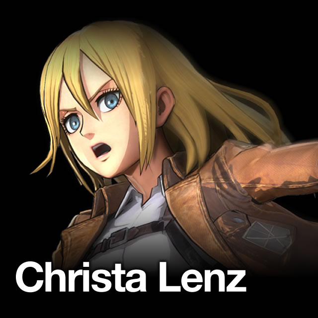
Криста - неуверенная в себе, но добрая девушка, готовая помогать людям. Она славится своими добротой и самопожертвованием, поэтому сослуживцы часто называют её «Богиня» и в мыслях предлагают ей выйти за них замуж.
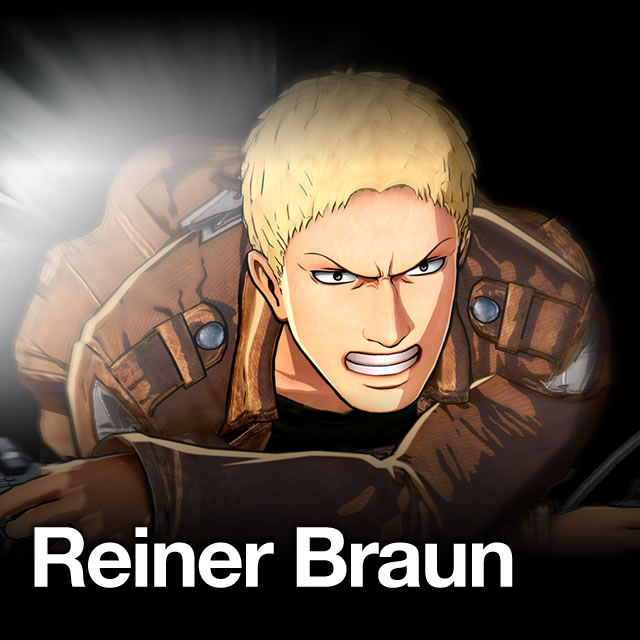
Райнер - заработал репутацию честного человека с сильным чувством долга, который очень серьёзно относится к своей роли солдата, мотивируя остальных. Также о нём отзывались как о человеке с добрым сердцем и склонностью в первую очередь думать о других, принимая на себя трудности товарищей.
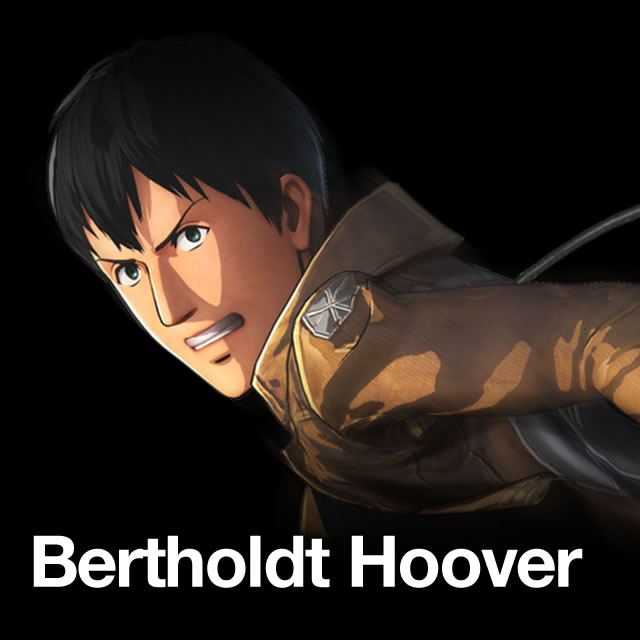
Бертольд - тихий, замкнутый человек. Кроме того, их инструктор отметил у него большой потенциал, но полное отсутствие инициативы. Он был описан Эреном как молчаливый человек заднего плана. По признанию Хувера, он является кем-то вроде труса.
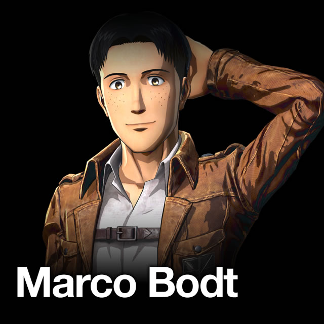
Марко - доброжелательный юноша, который наладил контакт со всеми товарищами. Он один из немногих, кто понимает Жана, оптимистично интерпретируя его грубый характер и антагонизм по отношению к другим в Корпусе.
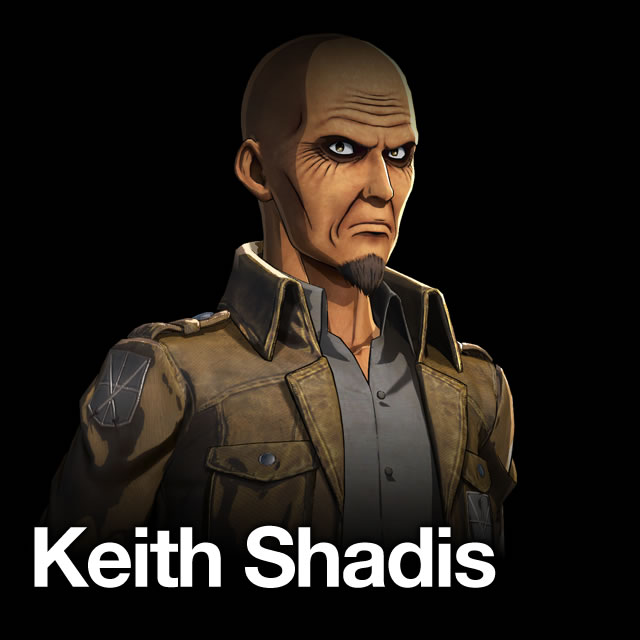